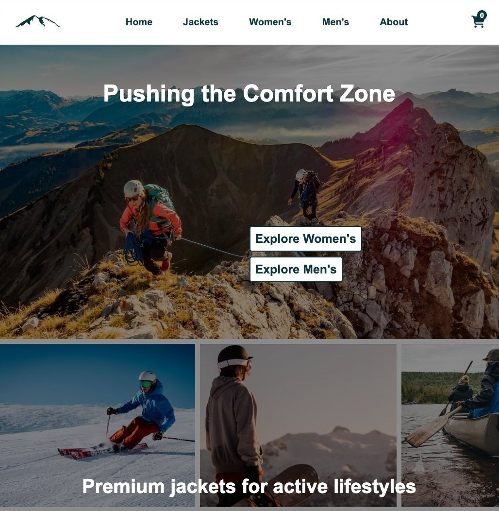

Cross Course Project
Rainydays
A responsive e-commerce website selling rain jackets, featuring dynamic product pages, filters, and cart functionality.
Showcasing my projects from the Frontend Development Program Year 1 at Noroff
A responsive e-commerce website selling rain jackets, featuring dynamic product pages, filters, and cart functionality.
An educational museum website for children and families, designed with accessibility, structure, and creativity in mind.
A food blog showcasing recipes from an API, with owner login, blog management, and responsive, modern design.